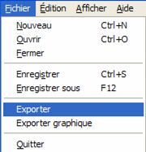
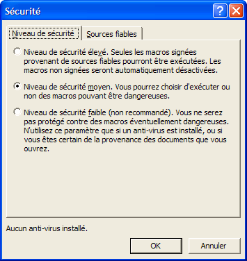

Exporter des données Fumiguide et produire des rapports de Fumigation
Le Fumiguide permet à l'utilisateur d'exporter des informations sous la forme MS-Word à l'aide d'un modèle. Après avoir ouvert le fichier Fumiguide ProFume désiré, cliquez sur « Fichier » dans le menu en haut à gauche, puis sur "Exporter".

Vous verrez alors les informations du Fumiguide fusionner avec le modèle MS Word de rapport. Cette fusion prendra quelques secondes, ce qui est normal.

Après revue ou édition de ce rapport, enregistrez le fichier, en cliquant sur "Fichier" dans le menu du haut et en sélectionnant "Enregistrer sous".

Quand la fenêtre "Enregistrer Sous"s'ouvre, saisissez le nom
désiré pour le fichier dans la boîte de nom "Fichier".

Si le document MS-Word ne s'est pas crée, la sécurité de votre macro est à un niveau trop élevé. Pour déterminer
les paramètres de sécurité de la macro, dans MS-Word, sélectionner
Outil, Macro puis Sécurité.

Il faut choisir le niveau de
sécurité Moyen qui permet à cette option de faire tourner la macro décrite précédemment.
